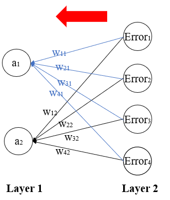

Back-propagation
Back-propagation is the process of neural network finding right weights.Depending on how much each node contributes to the total error.
we will focus on 1. How much error each node contributes 2. How much weight should be updated
